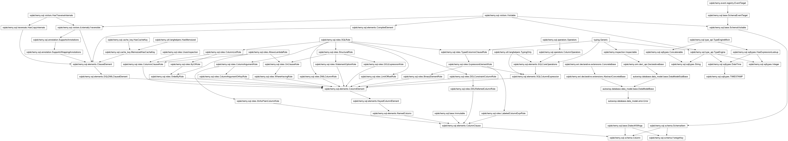

autowisp.database.data_model.error module
Class Inheritance Diagram

Define the Error table: the queryable record of a failure.
- class autowisp.database.data_model.error.Error(**kwargs)[source]
Bases:
DataModelBase
A persisted pipeline/step/BUI error.
Holds the queryable subset of an
AutoWISPError– the fields list views and aggregate queries need, so they never have to open the sidecar. The heavy remainder (full message, complete related-file list,details, traceback) lives in a per-error JSON sidecar referenced bysidecar_path; the two are disjoint, so nothing has to be kept in sync.Artifact links are foreign keys only for artifacts that are genuine database rows –
image_idandmaster_file_id. DR files and lightcurves are HDF5 files on disk with no row to reference, so they appear (by path) only in the sidecar’s related-file list.All links use
ON DELETE SET NULLso an error row stays valid as a historical record even if the artifact or run it referred to is later removed.- component
‘step’, ‘pipeline’, or ‘bui’.
- Type:
Which component raised it
- created
When the failure surfaced (the exception’s ‘crashed’ time).
- exception_class
Concrete exception class name, e.g. ‘SolveAstrometryError’, for filtering all occurrences of a kind of failure.
- id
A unique identifier for each row.
- image_id
The image the error is about, when a related file maps to a known image row.
- master_file_id
The master file the error is about, when a related file maps to a known master row.
- pipeline_run_id
The pipeline run during which the error occurred; NULL for standalone CLI/BUI errors with no run.
- resolved
When a user marked this error resolved; NULL while open. Open errors drive the error badge, progress-grid markers, and the start-processing gate; resolved errors are kept as history.
- sidecar_path
Path to the JSON detail sidecar, relative to the project home; NULL if the sidecar write failed (row stays valid).
- step_name
The processing step that failed; set for step errors.
- subprocess_id
PID of the multiprocessing worker that raised, when the error travelled out of a worker; NULL for main-process errors.
- timestamp
When record was last changed
- user_message
Short, jargon-free description for the BUI/CLI. The full technical message lives in the sidecar.